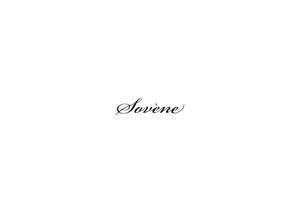

Trade Mark Journal No.2025/040 3 October 2025
UK00004267255 21 September 2025 (30,35,40,43)

- Class 30
- Starch products for food; Snack food products consisting of cereal products; Extruded food products made of wheat; Snack food products made from cereals; Extruded food products made of rice; Extruded food products made of maize; Snack food products made from rice; Pasta products; Snack food products made from maize flour; Snack food products made from soya flour; Snack food products made from cereal starch; Cocoa-based ingredients for confectionery products; Snack food products made from rice flour; Snack food products made from cereal flour; Snack food products made from rusk flour; Non-medicated confectionery products; Confectionery products (Non-medicated -); Snack food products made from potato flour.
- Class 35
- Providing consumer product information relating to food or drink products; Wholesale services in relation to dairy products; Retail services in relation to dairy products; Retail services in relation to food cooking equipment; Retail services relating to food; Wholesale services in relation to food cooking equipment; Retail services in relation to food preparation implements; Unmanned retail store services relating to food; Retail services relating to food preparation implements; Retail services in relation to beer; Wholesale services in relation to food preparation implements; Retail services in relation to non-alcoholic beverages; Business advisory services relating to the running of sandwich bars; Retail services in relation to desserts.
- Class 40
- Pasteurization services for food and beverages; Food preservation services; Food and beverage treatment.
- Class 43
- Hospitality services [food and drink]; Take-away food and drink services; Takeaway food and drink services; Services for providing food and drink; Services for the provision of food and drink; Services for the preparation of food and drink; Food and drink preparation services; Catering services for the provision of food and drink; Club services for the provision of food and drink; Catering (Food and drink -); Food and drink catering; Catering of food and drink; Provision of food and drink; Catering for the provision of food and drink; Providing food and drink; Providing of food and drink; Provision of food and drink in restaurants; Catering of food and drinks; Food and drink catering for institutions; Consultancy services in the field of food and drink catering; Take away food and drink services; Take-away food services; Providing food and drink for guests; Takeaway food services; Provision of food and beverages; Preparation of food and drink; Providing food and drink for guests in restaurants; Food reviewing services [provision of information about food and drinks]; Providing food and drink in bistros; Corporate hospitality (provision of food and drink); Catering for the provision of food and beverages; Providing food and drink catering services for exhibition facilities; Serving food and drinks; Food and drink catering for banquets; Serving food and drink for guests; Providing food and drink catering services for convention facilities; Services for providing drink; Providing drink services; Charitable services, namely providing food and drink catering; Providing food and beverages; Information, advice and reservation services for the provision of food and drink; Serving food and drink for guests in restaurants; Providing food and drink in doughnut shops; Restaurant services for the provision of fast food; Providing food and drink in Internet cafes; Food preparation services; Providing food and drink catering services for fair and exhibition facilities; Food and drink catering for cocktail parties; Providing food and drink in restaurants and bars; Serving food and drink in Internet cafes; Services for providing food; Take-away fast food services; Catering services for the provision of food; Serving food and drink in doughnut shops; Preparation of food and beverages; Serving food and drink in restaurants and bars; Contract food services; Preparation and provision of food and drink for immediate consumption; Providing of food and drink via a mobile truck; Night club services [provision of food]; Coffee supply services for offices [provision of beverages]; Take away food services; Consultancy services relating to food; Arranging of wedding receptions [food and drink]; Provision of information relating to the preparation of food and drink; Beer bar services; Beer garden services; Wine bar services; Rental of furniture, linens, table settings, and equipment for the provision of food and drink; Restaurant services; Take-out restaurant services; Rental of food service equipment; Consultancy services relating to food preparation; Snack bar services; Coffee bar services.
LINA SOVENKO